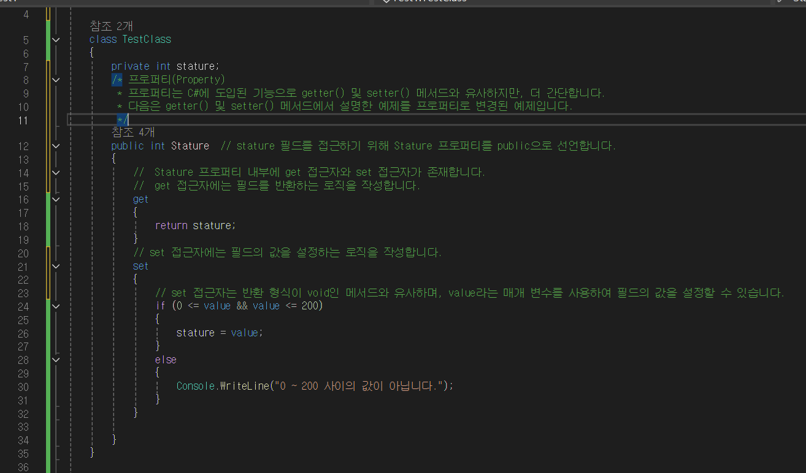

캡슐화 란?
정의 : 캡슐화란 객체의 상태(데이터)와 행동(메서드)을 하나로 묶어서 외부에서의 직접적인 접근을 제어하는것을 말합니다.
캡슐화의 장점
-
정보은닉(Information Hiding)
- 객체의 상태를 숨김으로써 외부에서의 직접적인 접근을 제한함으로써, 객체의 데이터 무결성과 보안을 유지할 수 있습니다. 이는 객체를 보호하고 오류를 줄여줍니다.
-
코드의 모듈화
- 캡슐화는 데이터와 그데이터를 처리하는 코드를 함께 묶어 하나의 모듈로 만듭니다. 이로써 코드의 가독성이 향상되며, 재사용성이 높아집니다.
-
유지 보수성 및 유연성
- 항상 객체 내부 구현을 외부로부터 감춤으로써, 내부 구현변경이 외부코드에 영향을 미치지 않습니다. 따라서 코드의 수정과 확장이 용이해집니다.
예시 사진
